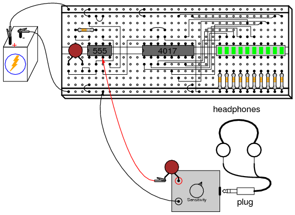

Digital circuits are circuits dealing with signals restricted to the extreme limits of zero and some full amount. This stands in contrast to analog circuits, in which signals are free to vary continuously between the limits imposed by power supply voltage and circuit resistances. These circuits find use in "true/false" logical operations and digital computation.
The circuits in this chapter make use of IC, or integrated circuit, components. Such components are actually networks of interconnected components manufactured on a single wafer of semiconducting material. Integrated circuits providing a multitude of pre-engineered functions are available at very low cost, benefitting students, hobbyists and professional circuit designers alike. Most integrated circuits provide the same functionality as "discrete" semiconductor circuits at higher levels of reliability and at a fraction of the cost.
Circuits in this chapter will primarily use CMOS technology, as this form of IC design allows for a broad range of power supply voltage while maintaining generally low power consumption levels. Though CMOS circuitry is susceptible to damage from static electricity (high voltages will puncture the insulating barriers in the MOSFET transistors), modern CMOS ICs are far more tolerant of electrostatic discharge than the CMOS ICs of the past, reducing the risk of chip failure by mishandling. Proper handling of CMOS involves the use of anti-static foam for storage and transport of IC's, and measures to prevent static charge from building up on your body (use of a grounding wrist strap, or frequently touching a grounded object).
Circuits using TTL technology require a regulated power supply voltage of 5 volts, and will not tolerate any substantial deviation from this voltage level. Any TTL circuits in this chapter will be adequately labeled as such, and it will be expected that you realize its unique power supply requirements.
When building digital circuits using integrated circuit "chips," it is highly recommended that you use a breadboard with power supply "rail" connections along the length. These are sets of holes in the breadboard that are electrically common along the entire length of the board. Connect one to the positive terminal of a battery, and the other to the negative terminal, and DC power will be available to any area of the breadboard via connection through short jumper wires:
With so many of these integrated circuits having "reset," "enable," and "disable" terminals needing to be maintained in a "high" or "low" state, not to mention the VDD (or VCC) and ground power terminals which require connection to the power supply, having both terminals of the power supply readily available for connection at any point along the board's length is very useful.
Most breadboards that I have seen have these power supply "rail" holes, but some do not. Up until this point, I've been illustrating circuits using a breadboard lacking this feature, just to show how it isn't absolutely necessary. However, digital circuits seem to require more connections to the power supply than other types of breadboard circuits, making this feature more than just a convenience.
PARTS AND MATERIALS
Caution! The 4011 IC is CMOS, and therefore sensitive to static electricity!
CROSS-REFERENCES
Lessons In Electric Circuits, Volume 4, chapter 3: "Logic Gates"
LEARNING OBJECTIVES
SCHEMATIC DIAGRAM
ILLUSTRATION
INSTRUCTIONS
To begin, connect a single NAND gate to two input switches and one LED, as shown. At first, the use of an 8-position switch and a 10-segment LED bargraph may seem excessive, since only two switches and one LED are needed to show the operation of a single NAND gate. However, the presence of those extra switches and LEDs make it very convenient to expand the circuit, and help make the circuit layout both clean and compact.
It is highly recommended that you have a datasheet for the 4011 chip available when you build your circuit. Don't just follow the illustration shown above! It is important that you develop the skill of reading datasheets, especially "pinout" diagrams, when connecting IC terminals to other circuit elements. The datasheet's connection diagram is an essential piece of information to have. Shown here is my own rendition of what any 4011 datasheet shows:
In the breadboard illustration, I've shown the circuit built using the lower-left NAND gate: pin #'s 1 and 2 are the inputs, and pin #3 is the output. Pin #'s 14 and 7 conduct DC power to all four gate circuits inside the IC chip, "VDD" representing the positive side of the power supply (+V), and "Gnd" representing the negative side of the power supply (-V), or ground. Sometimes the negative power supply terminal will be labeled "VSS" instead of "Gnd" on a datasheet, but it means the same thing.
Digital logic circuitry does not make use of split power supplies as op-amps do. Like op-amp circuits, though, ground is still the implicit point of reference for all voltage measurements. If I were to speak of a "high" signal being present on a certain pin of the chip, I would mean that there was full voltage between that pin and the negative side of the power supply (ground).
Note how all inputs of the unused gates inside the 4011 chip are connected either to VDD or ground. This is not a mistake, but an act of intentional design. Since the 4011 is a CMOS integrated circuit, and CMOS circuit inputs left unconnected (floating) can assume any voltage level merely from intercepting a static electric charge from a nearby object, leaving inputs floating means that those unused gates may receive any random combinations of "high" and "low" signals.
Why is this undesirable, if we aren't using those gates? Who cares what signals they receive, if we are not doing anything with their outputs? The problem is, if static voltage signals appear at the gate inputs that are not fully "high" or fully "low," the gates' internal transistors may begin to turn on in such a way as to draw excessive current. At worst, this could lead to damage of the chip. At best it means excessive power consumption. It matters little if we choose to connect these unused gate inputs "high" (VDD) or "low" (ground), so long as we connect them to one of those two places. In the breadboard illustration, I show all the top inputs connected to VDD, and all the bottom inputs (of the unused gates) connected to ground. This was done merely because those power supply rail holes were closer and did not require long jumper wires!
Please note that none of the unused gate outputs have been connected to VDD or ground, and for good reason! If I were to do that, I may be forcing a gate to assume the opposite output state that its trying to achieve, which is a complicated way of saying that I would have created a short-circuit. Imagine a gate that is supposed to output a "high" logic level (for a NAND gate, this would be true if any of its inputs were "low"). If such a gate were to have its output terminal directly connected to ground, it could never reach a "high" state (being made electrically common to ground through the jumper wire connection). Instead, its upper (P-channel) output transistor would be turned on in vain, sourcing maximum current to a nonexistent load. This would very likely damage the gate! Gate output terminals, by their very nature, generate their own logic levels and never "float" in the same way that CMOS gate inputs do.
The two 10 kΩ resistors are placed in the circuit to avoid floating input conditions on the used gate. With a switch closed, the respective input will be directly connected to VDD and therefore be "high." With a switch open, the 10 kΩ "pulldown" resistor provides a resistive connection to ground, ensuring a secure "low" state at the gate's input terminal. This way, the input will not be susceptible to stray static voltages.
With the NAND gate connected to the two switches and one LED as shown, you are ready to develop a "truth table" for the NAND gate. Even if you already know what a NAND gate truth table looks like, this is a good exercise in experimentation: discovering a circuit's behavioral principles by induction. Draw a truth table on a piece of paper like this:
The "A" and "B" columns represent the two input switches, respectively. When the switch is on, its state is "high" or 1. When the switch is off, its state is "low," or 0, as ensured by its pulldown resistor. The gate's output, of course, is represented by the LED: whether it is lit (1) or unlit (0). After placing the switches in every possible combination of states and recording the LED's status, compare the resulting truth table with what a NAND gate's truth table should be.
As you can imagine, this breadboard circuit is not limited to testing NAND gates. Any gate type may be tested with two switches, two pulldown resistors, and an LED to indicate output status. Just be sure to double-check the chip's "pinout" diagram before substituting it pin-for-pin in place of the 4011. Not all "quad" gate chips have the same pin assignments!
An improvement you might want to make to this circuit is to assign a couple of LEDs to indicate input status, in addition to the one LED assigned to indicate the output. This makes operation a little more interesting to observe, and has the further benefit of indicating if a switch fails to close (or open) by showing the true input signal to the gate, rather than forcing you to infer input status from switch position:
PARTS AND MATERIALS
Caution! The 4001 IC is CMOS, and therefore sensitive to static electricity!
CROSS-REFERENCES
Lessons In Electric Circuits, Volume 4, chapter 3: "Logic Gates"
Lessons In Electric Circuits, Volume 4, chapter 10: "Multivibrators"
LEARNING OBJECTIVES
SCHEMATIC DIAGRAM
ILLUSTRATION
INSTRUCTIONS
The 4001 integrated circuit is a CMOS quad NOR gate, identical in input, output, and power supply pin assignments to the 4011 quad NAND gate. Its "pinout," or "connection," diagram is as such:
When two NOR gates are cross-connected as shown in the schematic diagram, there will be positive feedback from output to input. That is, the output signal tends to maintain the gate in its last output state. Just as in op-amp circuits, positive feedback creates hysteresis. This tendency for the circuit to remain in its last output state gives it a sort of "memory." In fact, there are solid-state computer memory technologies based on circuitry like this!
If we designate the left switch as the "Set" input and the right switch as the "Reset," the left LED will be the "Q" output and the right LED the "Q-not" output. With the Set input "high" (switch on) and the Reset input "low," Q will go "high" and Q-not will go "low." This is known as the set state of the circuit. Making the Reset input "high" and the Set input "low" reverses the latch circuit's output state: Q "low" and Q-not "high." This is known as the reset state of the circuit. If both inputs are placed into the "low" state, the circuit's Q and Q-not outputs will remain in their last states, "remembering" their prior settings. This is known as the latched state of the circuit.
Because the outputs have been designated "Q" and "Q-not," it is implied that their states will always be complementary (opposite). Thus, if something were to happen that forced both outputs to the same state, we would be inclined to call that mode of the circuit "invalid." This is exactly what will happen if we make both Set and Reset inputs "high:" both Q and Q-not outputs will be forced to the same "low" logic state. This is known as the invalid or illegal state of the circuit, not because something has gone wrong, but because the outputs have failed to meet the expectations established by their labels.
Since the "latched" state is a hysteretic condition whereby the last output states are "remembered," one might wonder what will happen if the circuit powers up this way, with no previous state to hold. To experiment, place both switches in their off positions, making both Set and Reset inputs low, then disconnect one of the battery wires from the breadboard. Then, quickly make and break contact between that battery wire and its proper connection point on the breadboard, noting the status of the two LEDs as the circuit is powered up again and again:
When a latch circuit such as this is powered up into its "latched" state, the gates race against each other for control. Given the "low" inputs, both gates try to output "high" signals. If one of the gates reaches its "high" output state before the other, that "high" state will be fed back to the other gate's input to force its output "low," and the race is won by the faster gate.
Invariably, one gate wins the race, due to internal variations between gates in the chip, and/or external resistances and capacitances that act to delay one gate more than the other. What this usually means is that the circuit tends to power up in the same mode, over and over again. However, if you are persistent in your powering/unpowering cycles, you should see at least a few times where the latch circuit powers up latched in the opposite state from normal.
Race conditions are generally undesirable in any kind of system, as they lead to unpredictable operation. They can be particularly troublesome to locate, as this experiment shows, because of the unpredictability they create. Imagine a scenario, for instance, where one of the two NOR gates was exceptionally slow-acting, due to a defect in the chip. This handicap would cause the other gate to win the power-up race every time. In other words, the circuit will be very predictable on power-up with both inputs "low." However, suppose that the unusual chip were to be replaced by one with more evenly matched gates, or by a chip where the other NOR gate were consistently slower. Normal circuit behavior is not supposed to change when a component is replaced, but if race conditions are present, a change of components may very well do just that.
Due to the inherent race tendency of an S-R latch, one should not design a circuit with the expectation of a consistent power-up state, but rather use external means to "force" the race so that the desired gate always "wins."
An interesting modification to try in this circuit is to replace one of the 470 Ω LED "dropping" resistors with a lower-value unit, such as 100 Ω. The obvious effect of this alteration will be increased LED brightness, as more current is allowed through. A not-so-obvious effect will also result, and it is this effect which holds great learning value. Try replacing one of the 470 Ω resistors with a 100 Ω resistor, and operate the input signal switches through all four possible setting combinations, noting the behavior of the circuit.
You should note that the circuit refuses to latch in one of its states (either Set or Reset), but only in the other state, when the input switches are both set "low" (the "latch" mode). Why is this? Take a voltmeter and measure the output voltage of the gate whose output is "high" when both inputs are "low." Note this voltage indication, then set the input switches in such a way that the other state (either Reset or Set) is forced, and measure the output voltage of the other gate when its output is "high." Note the difference between the two gate output voltage levels, one gate loaded by an LED with a 470 Ω resistor, and the other loaded by an LED with a 100 Ω resistor. The one loaded down by the "heavier" load (100 Ω resistor) will be much less: so much less that this voltage will not be interpreted by the other NOR gate's input as a "high" signal at all as it is fed back! All logic gates have permissible "high" and "low" input signal voltage ranges, and if the voltage of a digital signal falls outside this permissible range, it might not be properly interpreted by the receiving gate. In a latch circuit such as this, which depends on a solid "high" signal fed back from the output of one gate to the input of the other, a "weak" signal will not be able to maintain the positive feedback necessary to keep the circuit latched in one of its states.
This is one reason I favor the use of a voltmeter as a logic "probe" for determining digital signal levels, rather than an actual logic probe with "high" and "low" lights. A logic probe may not indicate the presence of a "weak" signal, whereas a voltmeter definitely will by means of its quantitative indication. This type of problem, common in circuits where different "families" of integrated circuits are mixed (TTL and CMOS, for example), can only be found with test equipment providing quantitative measurements of signal level.
PARTS AND MATERIALS
Caution! The 4011 IC is CMOS, and therefore sensitive to static electricity!
CROSS-REFERENCES
Lessons In Electric Circuits, Volume 4, chapter 3: "Logic Gates"
Lessons In Electric Circuits, Volume 4, chapter 10: "Multivibrators"
LEARNING OBJECTIVES
SCHEMATIC DIAGRAM
ILLUSTRATION
INSTRUCTIONS
Although this circuit uses NAND gates instead of NOR gates, its behavior is identical to that of the NOR gate S-R latch (a "high" Set input drives Q "high," and a "high" Reset input drives Q-not "high"), except for the presence of a third input: the Enable. The purpose of the Enable input is to enable or disable the Set and Reset inputs from having effect over the circuit's output status. When the Enable input is "high," the circuit acts just like the NOR gate S-R latch. When the Enable input is "low," the Set and Reset inputs are disabled and have no effect whatsoever on the outputs, leaving the circuit in its latched state.
This kind of latch circuit (also called a gated S-R latch), may be constructed from two NOR gates and two AND gates, but the NAND gate design is easier to build since it makes use of all four gates in a single integrated circuit.
PARTS AND MATERIALS
Caution! The 4011 IC is CMOS, and therefore sensitive to static electricity!
Although the parts list calls for a ten-segment LED unit, the illustration shows two individual LEDs being used instead. This is due to lack of room on my breadboard to mount the switch assembly, two integrated circuits, and the bargraph. If you have room on your breadboard, feel free to use the bargraph as called for in the parts list, and as shown in prior latch circuits.
CROSS-REFERENCES
Lessons In Electric Circuits, Volume 4, chapter 3: "Logic Gates"
Lessons In Electric Circuits, Volume 4, chapter 10: "Multivibrators"
LEARNING OBJECTIVES
SCHEMATIC DIAGRAM
ILLUSTRATION
INSTRUCTIONS
The only difference between a gated (or enabled) latch and a flip-flop is that a flip-flop is enabled only on the rising or falling edge of a "clock" signal, rather than for the entire duration of a "high" enable signal. Converting an enabled latch into a flip-flop simply requires that a "pulse detector" circuit be added to the Enable input, so that the edge of a clock pulse generates a brief "high" Enable pulse:
The single NOR gate and three inverter gates create this effect by exploiting the propagation delay time of multiple, cascaded gates. In this experiment, I use three NOR gates with paralleled inputs to create three inverters, thus using all four NOR gates of a 4001 integrated circuit:
Normally, when using a NOR gate as an inverter, one input would be grounded while the other acts as the inverter input, to minimize input capacitance and increase speed. Here, however, slow response is desired, and so I parallel the NOR inputs to make inverters rather than use the more conventional method.
Please note that this particular pulse detector circuit produces a "high" output pulse at every falling edge of the clock (input) signal. This means that the flip-flop circuit should be responsive to the Set and Reset input states only when the middle switch is moved from "on" to "off," not from "off" to "on."
When you build this circuit, though, you may discover that the outputs respond to Set and Reset input signals during both transitions of the Clock input, not just when it is switched from a "high" state to a "low" state. The reason for this is contact bounce: the effect of a mechanical switch rapidly making-and-breaking when its contacts are first closed, due to the elastic collision of the metal contact pads. Instead of the Clock switch producing a single, clean low-to-high signal transition when closed, there will most likely be several low-high-low "cycles" as the contact pads "bounce" upon off-to-on actuation. The first high-to-low transition caused by bouncing will trigger the pulse detector circuit, enabling the S-R latch for that moment in time, making it responsive to the Set and Reset inputs.
Ideally, of course, switches are perfect and bounce-free. In the real world, though, contact bounce is a very common problem for digital gate circuits operated by switch inputs, and must be understood well if it is to be overcome.
PARTS AND MATERIALS
Caution! The 4017 IC is CMOS, and therefore sensitive to static electricity!
Any single-pole, single-throw switch is adequate. A household light switch will work fine, and is readily available at any hardware store.
The audio detector will be used to assess signal frequency. If you have access to an oscilloscope, the audio detector is unnecessary.
CROSS-REFERENCES
Lessons In Electric Circuits, Volume 4, chapter 3: "Logic Gates"
Lessons In Electric Circuits, Volume 4, chapter 4: "Switches"
Lessons In Electric Circuits, Volume 4, chapter 11: "Counters"
LEARNING OBJECTIVES
SCHEMATIC DIAGRAM
ILLUSTRATION
INSTRUCTIONS
The model 4017 integrated circuit is a CMOS counter with ten output terminals. One of these ten terminals will be in a "high" state at any given time, with all others being "low," giving a "one-of-ten" output sequence. If low-to-high voltage pulses are applied to the "clock" (Clk) terminal of the 4017, it will increment its count, forcing the next output into a "high" state.
With a 555 timer connected as an astable multivibrator (oscillator) of low frequency, the 4017 will cycle through its ten-count sequence, lighting up each LED, one at a time, and "recycling" back to the first LED. The result is a visually pleasing sequence of flashing lights. Feel free to experiment with resistor and capacitor values on the 555 timer to create different flash rates.
Try disconnecting the jumper wire leading from the 4017's "Clock" terminal (pin #14) to the 555's "Output" terminal (pin #3) where it connects to the 555 timer chip, and hold its end in your hand. If there is sufficient 60 Hz power-line "noise" around you, the 4017 will detect it as a fast clock signal, causing the LEDs to blink very rapidly.
Two terminals on the 4017 chip, "Reset" and "Clock Enable," are maintained in a "low" state by means of a connection to the negative side of the battery (ground). This is necessary if the chip is to count freely. If the "Reset" terminal is made "high," the 4017's output will be reset back to 0 (pin #3 "high," all other output pins "low"). If the "Clock Enable" is made "high," the chip will stop responding to the clock signal and pause in its counting sequence.
If the 4017's "Reset" terminal is connected to one of its ten output terminals, its counting sequence will be cut short, or truncated. You may experiment with this by disconnecting the "Reset" terminal from ground, then connecting a long jumper wire to the "Reset" terminal for easy connection to the outputs at the ten-segment LED bargraph. Notice how many (or how few) LEDs light up with the "Reset" connected to any one of the outputs:
Counters such as the 4017 may be used as digital frequency dividers, to take a clock signal and produce a pulse occurring at some integer factor of the clock frequency. For example, if the clock signal from the 555 timer is 200 Hz, and the 4017 is configured for a full-count sequence (the "Reset" terminal connected to ground, giving a full, ten-step count), a signal with a period ten times as long (20 Hz) will be present at any of the 4017's output terminals. In other words, each output terminal will cycle once for every ten cycles of the clock signal: a frequency ten times as slow.
To experiment with this principle, connect your audio detector between output 0 (pin #3) of the 4017 and ground, through a very small capacitor (0.047 µF to 0.001 µF). The capacitor is used for "coupling" AC signals only, to that you may audibly detect pulses without placing a DC (resistive) load on the counter chip output. With the 4017 "Reset" terminal grounded, you will have a full-count sequence, and you will hear a "click" in the headphones every time the "0" LED lights up, corresponding to 1/10 of the 555's actual output frequency:
In fact, knowing this mathematical relationship between clicks heard in the headphone and the clock frequency allows us to measure the clock frequency to a fair degree of precision. Using a stopwatch or other timepiece, count the number of clicks heard in one full minute while connected to the 4017's "0" output. Using a 1 MΩ resistor and 0.1 µF capacitor in the 555 timing circuit, and a power supply voltage of 13 volts (instead of 6), I counted 79 clicks in one minute from my circuit. Your circuit may produce slightly different results. Multiply the number of pulses counted at the "0" output by 10 to obtain the number of cycles produced by the 555 timer during that same time (my circuit: 79 x 10 = 790 cycles). Divide this number by 60 to obtain the number of timer cycles elapsed in each second (my circuit: 790/60 = 13.17). This final figure is the clock frequency in Hz.
Now, leaving one test probe of the audio detector connected to ground, take the other test probe (the one with the coupling capacitor connected in series) and connect it to pin #3 of the 555 timer. The buzzing you hear is the undivided clock frequency:

By connecting the 4017's "Reset" terminal to one of the output terminals, a truncated sequence will result. If we are using the 4017 as a frequency divider, this means the output frequency will be a different factor of the clock frequency: 1/9, 1/8, 1/7, 1/6, 1/5, 1/4, 1/3, or 1/2, depending on which output terminal we connect the "Reset" jumper wire to. Re-connect the audio detector test probe to output "0" of the 4017 (pin #3), and connect the "Reset" terminal jumper to the sixth LED from the left on the bargraph. This should produce a 1/5 frequency division ratio:
Counting the number of clicks heard in one minute again, you should obtain a number approximately twice as large as what was counted with the 4017 configured for a 1/10 ratio, because 1/5 is twice as large a ratio as 1/10. If you do not obtain a count that is exactly twice what you obtained before, it is because of error inherent to the method of counting cycles: coordinating your sense of hearing with the display of a stopwatch or other time-keeping device.
Try replacing the 1 MΩ timing resistor in the 555 circuit with one of greatly lesser value, such as 10 kΩ. This will increase the clock frequency driving the 4017 chip. Use the audio detector to listen to the divided frequency at pin #3 of the 4017, noting the different tones produced as you move the "Reset" jumper wire to different outputs, creating different frequency division ratios. See if you can produce octaves by dividing the original frequency by 2, then by 4, and then by 8 (each descending octave represents one-half the previous frequency). Octaves are readily distinguished from other divided frequencies by their similar pitches to the original tone.
A final lesson that may be learned from this circuit is that of switch contact "bounce." For this, you will need a switch to provide clock signals to the 4017 chip, instead of the 555 timer. Re-connect the "Reset" jumper wire to ground to enable a full ten-step count sequence, and disconnect the 555's output from the 4017's "Clock" input terminal. Connect a switch in series with a 10 kΩ pulldown resistor, and connect this assembly to the 4017 "Clock" input as shown:

The purpose of a "pulldown" resistor is to provide a definite "low" logic state when the switch contact opens. Without this resistor in place, the 4017's "Clock" input wire would be floating whenever the switch contact was opened, leaving it susceptible to interference from stray static voltages or electrical "noise," either one capable of making the 4017 count randomly. With the pulldown resistor in place, the 4017's "Clock" input will have a definite, albeit resistive, connection to ground, providing a stable "low" logic state that precludes any interference from static electricity or "noise" coupled from nearby AC circuit wiring.
Actuate the switch on and off, noting the action of the LEDs. With each off-to-on switch transition, the 4017 should increment once in its count. However, you may notice some strange behavior: sometimes, the LED sequence will "skip" one or even several steps with a single switch closure. Why is this? It is due to very rapid, mechanical "bouncing" of the switch contacts. When two metallic contacts are brought together rapidly as does happen inside most switches, there will be an elastic collision. This collision results in the contacts making and breaking very rapidly as they "bounce" off one another. Normally, this "bouncing" is much to rapid for you to see its effects, but in a digital circuit such as this where the counter chip is able to respond to very quick clock pulses, these "bounces" are interpreted as distinct clock signals, and the count incremented accordingly.
One way to combat this problem is to use a timing circuit to produce a single pulse for any number of input pulse signals received within a short amount of time. The circuit is called a monostable multivibrator, and any technique eliminating the false pulses caused by switch contact "bounce" is called debouncing.
The 555 timer circuit is capable of functioning as a debouncer, if the "Trigger" input is connected to the switch as such:
Please note that since we are using the 555 once again to provide a clock signal to the 4017, we must re-connect pin #3 of the 555 chip to pin #14 of the 4017 chip! Also, if you have altered the values of the resistor or capacitor in the 555 timer circuit, you should return to the original 1 MΩ and 0.1 µF components.
Actuate the switch again and note the counting behavior of the 4017. There should be no more "skipped" counts as there were before, because the 555 timer outputs a single, crisp pulse for every on-to-off actuation (notice the inversion of operation here!) of the switch. It is important that the timing of the 555 circuit be appropriate: the time to charge the capacitor should be longer than the "settling" period of the switch (the time required for the contacts to stop bouncing), but not so long that the timer would "miss" a rapid sequence of switch actuations, if they were to occur.
PARTS AND MATERIALS
Caution! Both the 4001 and 4070 ICs are CMOS, and therefore sensitive to static electricity!
This experiment may be built using only one 8-position DIP switch, but the concept is easier to understand if two switch assemblies are used. The idea is, one switch acts to hold the correct code for unlocking the lock, while the other switch serves as a data entry point for the person trying to open the lock. In real life, of course, the switch assembly with the "key" code set on it must be hidden from the sight of the person opening the lock, which means it must be physically located elsewhere from where the data entry switch assembly is. This requires two switch assemblies. However, if you understand this concept clearly, you may build a working circuit with only one 8-position switch, using the left four switches for data entry and the right four switches to hold the "key" code.
For extra effect, choose different colors of LED: green for "Go" and red for "No go."
CROSS-REFERENCES
Lessons In Electric Circuits, Volume 4, chapter 3: "Logic Gates"
LEARNING OBJECTIVES
SCHEMATIC DIAGRAM
ILLUSTRATION
INSTRUCTIONS
This circuit illustrates the use of XOR (Exclusive-OR) gates as bit comparators. Four of these XOR gates compare the respective bits of two 4-bit binary numbers, each number "entered" into the circuit via a set of switches. If the two numbers match, bit for bit, the green "Go" LED will light up when the "Enter" pushbutton switch is pressed. If the two numbers do not exactly match, the red "No go" LED will light up when the "Enter" pushbutton is pressed.
Because four bits provides a mere sixteen possible combinations, this lock circuit is not very sophisticated. If it were used in a real application such as a home security system, the "No go" output would have to be connected to some kind of siren or other alarming device, so that the entry of an incorrect code would deter an unauthorized person from attempting another code entry. Otherwise, it would not take much time to try all combinations (0000 through 1111) until the correct one was found! In this experiment, I do not describe how to work this circuit into a real security system or lock mechanism, but only how to make it recognize a pre-entered code.
The "key" code that must be matched at the data entry switch array should be hidden from view, of course. If this were part of a real security system, the data entry switch assembly would be located outside the door, and the key code switch assembly behind the door with the rest of the circuitry. In this experiment, you will likely locate the two switch assemblies on two different breadboards, but it is entirely possible to build the circuit using just a single (8-position) DIP switch assembly. Again, the purpose of the experiment is not to make a real security system, but merely to introduce you to the principle of XOR gate code comparison.
It is the nature of an XOR gate to output a "high" (1) signal if the input signals are not the same logic state. The four XOR gates' output terminals are connected through a diode network which functions as a four-input OR gate: if any of the four XOR gates outputs a "high" signal -- indicating that the entered code and the key code are not identical -- then a "high" signal will be passed on to the NOR gate logic. If the two 4-bit codes are identical, then none of the XOR gate outputs will be "high," and the pull-down resistor connected to the common sides of the diodes will provide a "low" signal state to the NOR logic.
The NOR gate logic performs a simple task: prevent either of the LEDs from turning on if the "Enter" pushbutton is not pressed. Only when this pushbutton is pressed can either of the LEDs energize. If the Enter switch is pressed and the XOR outputs are all "low," the "Go" LED will light up, indicating that the correct code has been entered. If the Enter switch is pressed and any of the XOR outputs are "high," the "No go" LED will light up, indicating that an incorrect code has been entered. Again, if this were a real security system, it would be wise to have the "No go" output do something that deters an unauthorized person from discovering the correct code by trial-and-error. In other words, there should be some sort of penalty for entering an incorrect code. Let your imagination guide your design of this detail!
PARTS AND MATERIALS
Caution! The 4027 IC is CMOS, and therefore sensitive to static electricity!
CROSS-REFERENCES
Lessons In Electric Circuits, Volume 4, chapter 10: "Multivibrators"
Lessons In Electric Circuits, Volume 4, chapter 11: "Counters"
LEARNING OBJECTIVES
SCHEMATIC DIAGRAM
ILLUSTRATION
INSTRUCTIONS
In a sense, this circuit "cheats" by using only two J-K flip-flops to make a three-bit binary counter. Ordinarily, three flip-flops would be used -- one for each binary bit -- but in this case we can use the clock pulse (555 timer output) as a bit of its own. When you build this circuit, you will find that it is a "down" counter. That is, its count sequence goes from 111 to 110 to 101 to 100 to 011 to 010 to 001 to 000 and then back to 111. While it is possible to construct an "up" counter using J-K flip-flops, this would require additional components and introduce more complexity into the circuit.
The 555 timer operates as a slow, square-wave oscillator with a duty cycle of approximately 50 percent. This duty cycle is made possible by the use of a diode to "bypass" the lower resistor during the capacitor's charging cycle, so that the charging time constant is only RC and not 2RC as it would be without the diode in place.
It is highly recommended, in this experiment as in all experiments, to build the circuit in stages: identify portions of the circuit with specific functions, and build those portions one at a time, testing each one and verifying its performance before building the next. A very common mistake of new electronics students is to build an entire circuit at once without testing sections of it during the construction process, and then be faced with the possibility of several problems simultaneously when it comes time to finally apply power to it. Remember that a small amount of extra attention paid to detail near the beginning of a project is worth an enormous amount of troubleshooting work near the end! Students who make the mistake of not testing circuit portions before attempting to operate the entire circuit often (falsely) think that the time it would take to test those sections is not worth it, and then spend days trying to figure out what the problem(s) might be with their experiment.
Following this philosophy, build the 555 timer circuit first, before even plugging the 4027 IC into the breadboard. Connect the 555's output (pin #3) to the "Least Significant Bit" (LSB) LED, so that you have visual indication of its status. Make sure that the output oscillates in a slow, square-wave pattern (LED is "lit" for about as long as it is "off" in a cycle), and that it is a reliable signal (no erratic behavior, no unexplained pauses). If the 555 timer is not working properly, neither will the rest of the counter circuit! Once the timer circuit has been proven good, proceed to plug the 4027 IC into the breadboard and complete the rest of the necessary connections between it, the 555 timer circuit, and the LED assembly.
PARTS AND MATERIALS
Caution! The 4511 IC is CMOS, and therefore sensitive to static electricity!
CROSS-REFERENCES
Lessons In Electric Circuits, Volume 4, chapter 9: "Combinational Logic Functions"
LEARNING OBJECTIVES
SCHEMATIC DIAGRAM
ILLUSTRATION
INSTRUCTIONS
This experiment is more of an introduction to the 4511 decoder/display driver IC than it is a lesson in how to "build up" a digital function from lower-level components. Since 7-segment displays are very common components of digital devices, it is good to be familiar with the "driving" circuits behind them, and the 4511 is a good example of a typical driver IC.
Its operating principle is to input a four-bit BCD (Binary-Coded Decimal) value, and energize the proper output lines to form the corresponding decimal digit on the 7-segment LED display. The BCD inputs are designated A, B, C, and D in order from least-significant to most-significant. Outputs are labeled a, b, c, d, e, f, and g, each letter corresponding to a standardized segment designation for 7-segment displays. Of course, since each LED segment requires its own dropping resistor, we must use seven 470 Ω resistors placed in series between the 4511's output terminals and the corresponding terminals of the display unit.
Most 7-segment displays also provide for a decimal point (sometimes two!), a separate LED and terminal designated for its operation. All LEDs inside the display unit are made common to each other on one side, either cathode or anode. The 4511 display driver IC requires a common-cathode 7-segment display unit, and so that is what is used here.
After building the circuit and applying power, operate the four switches in a binary counting sequence (0000 to 1111), noting the 7-segment display. A 0000 input should result in a decimal "0" display, a 0001 input should result in a decimal "1" display, and so on through 1001 (decimal "9"). What happens for the binary numbers 1010 (10) through 1111 (15)? Read the datasheet on the 4511 IC and see what the manufacturer specifies for operation above an input value of 9. In the BCD code, there is no real meaning for 1010, 1011, 1100, 1101, 1110, or 1111. These are binary values beyond the range of a single decimal digit, and so have no function in a BCD system. The 4511 IC is built to recognize this, and output (or not output!) accordingly.
Three inputs on the 4511 chip have been permanently connected to either Vdd or ground: the "Lamp Test," "Blanking Input," and "Latch Enable." To learn what these inputs do, remove the short jumpers connecting them to either power supply rail (one at a time!), and replace the short jumper with a longer one that can reach the other power supply rail. For example, remove the short jumper connecting the "Latch Enable" input (pin #5) to ground, and replace it with a long jumper wire that can reach all the way to the Vdd power supply rail. Experiment with making this input "high" and "low," observing the results on the 7-segment display as you alter the BCD code with the four input switches. After you've learned what the input's function is, connect it to the power supply rail enabling normal operation, and proceed to experiment with the next input (either "Lamp Test" or "Blanking Input").
Once again, the manufacturer's datasheet will be informative as to the purpose of each of these three inputs. Note that the "Lamp Test" (LT) and "Blanking Input" (BI) input labels are written with boolean complementation bars over the abbreviations. Bar symbols designate these inputs as active-low, meaning that you must make each one "low" in order to invoke its particular function. Making an active-low input "high" places that particular input into a "passive" state where its function will not be invoked. Conversely, the "Latch Enable" (LE) input has no complementation bar written over its abbreviation, and correspondingly it is shown connected to ground ("low") in the schematic so as to not invoke that function. The "Latch Enable" input is an active-high input, which means it must be made "high" (connected to Vdd) in order to invoke its function.
Lessons In Electric Circuits copyright (C) 2002-2023 Tony R. Kuphaldt, under the terms and conditions of the CC BY License.